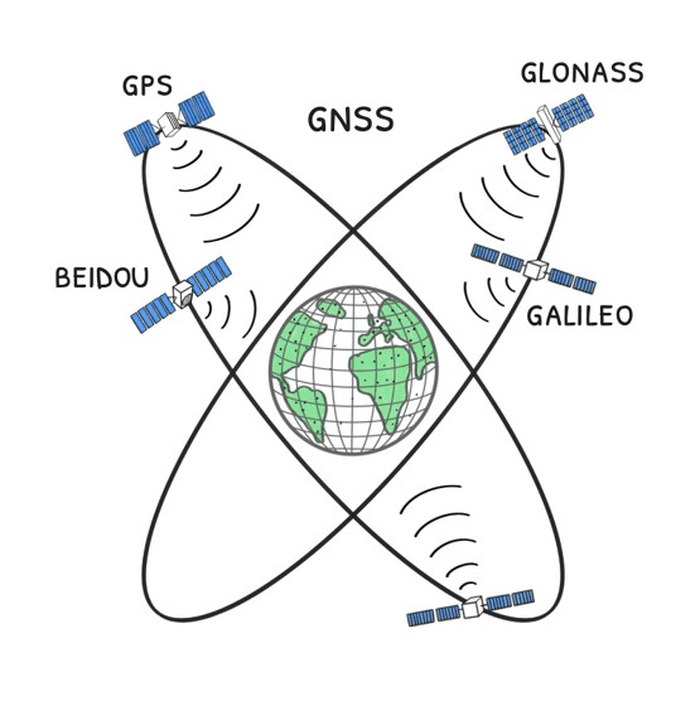

Why GNSS is not enough
Nearly everything that finds a position, gives directions or keeps precise time today runs on GPS, Galileo, GLONASS and BeiDou. The dependency does not stop at vehicle navigation: emergency crews, public fleets, telephone networks, the electrical grid and freight all hang on the same four systems.

Where it breaks
- The signal is lost in tunnels, indoors and between tall buildings.
- The signal is weak, so it is easy to drown out, and the equipment for doing it keeps spreading.
- A fake signal makes the receiver work out a wrong position. The receiver then shows that position as though it were right, and with high confidence. That is what makes it dangerous.
- Every service people's lives depend on runs on one technology.
- If a crisis comes, the decision to switch these systems off is not taken in Turkey.
What has already happened
- United States, May 2026. An air ambulance out of Roswell flew into military GPS jamming and hit a mountain short of Ruidoso. Report on the NTSB finding
- The Baltic, April 2024. Finnair stopped flying to Tartu for a month. Two airliners lost the signal on approach and turned back to Helsinki, and the airport closed for weeks because its only approach system was GPS based. Anadolu Agency
- Norway, 2019 onwards. Steady jamming from the Kola Peninsula has repeatedly blinded police, ambulance and rescue navigation in Finnmark. During one snowstorm a missing person's emergency beacon failed and the rescue helicopters flew blind. The Barents Observer
- The Black Sea, 2017. Receivers on more than twenty commercial ships put them at an airport 40 km inland while they were at sea. GalileoGNSS
What YERKON answers
The rural unit reaches up to eight kilometres, so a low flying aircraft can hear it too. Units around an airport leave a separate network that keeps working on the ground even with the satellites silenced. These are the report's claims, and this repository measured none of them in the field.
Against a fake signal YERKON does more than stand by. A vehicle or a ship puts the satellite's position beside the one from the ground; if the two disagree, it knows it is under attack.